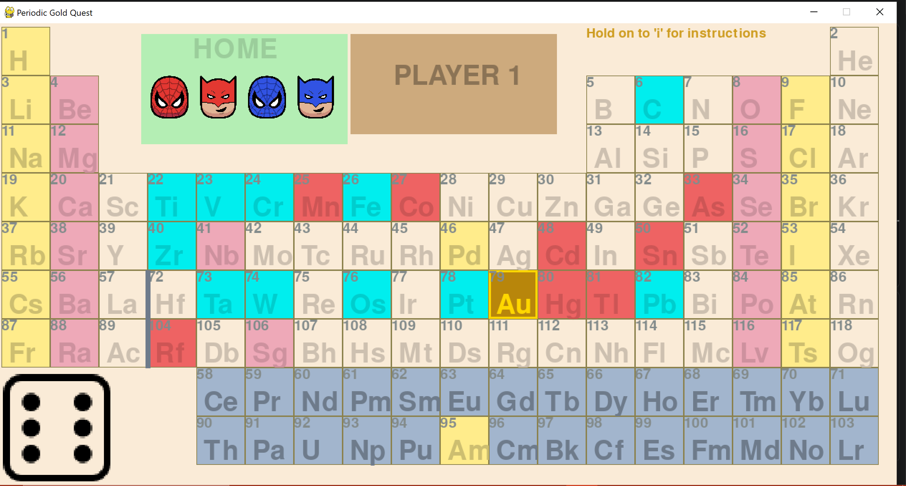
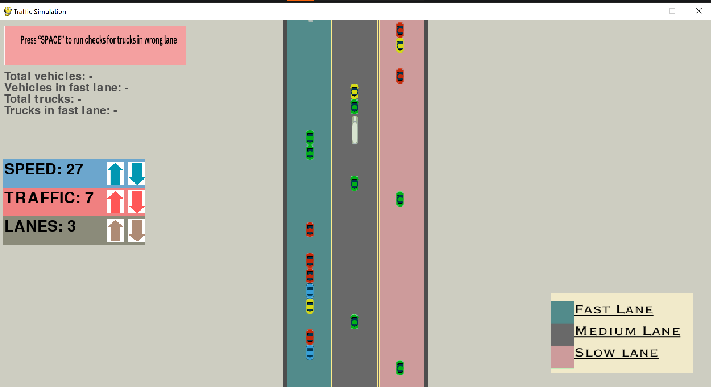
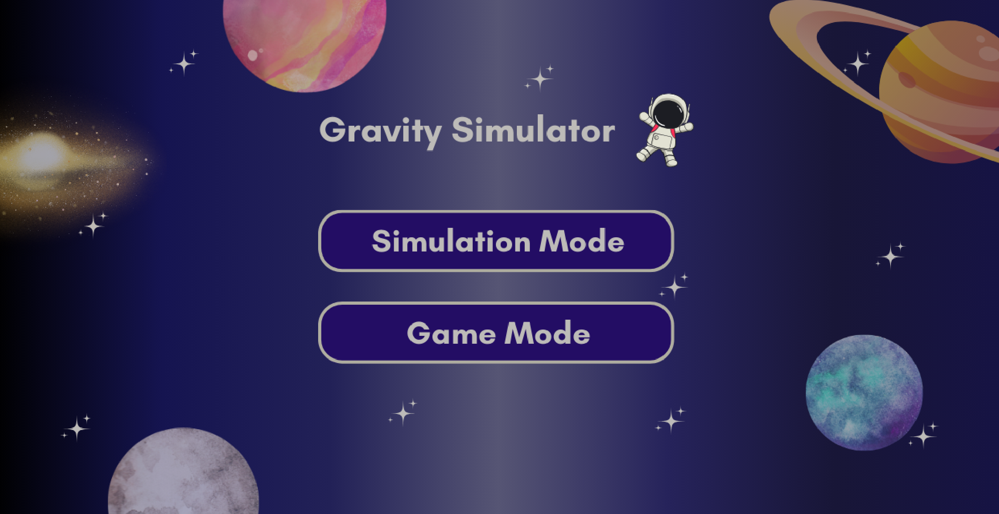

Project 1: Periodic Gold Quest Game

I designed and implemented this game in Python in my first semester in Habib University for the course Algorithmic Problem Solving. This board game is based on a periodic table where each player has two tiles and they have to make any of their tiles reach the Gold first and encounter several hurdles and bonuses on their path based on the element they land on.
Project 2: Traffic Simulation

I designed and implemented this simulation in Python in my second semester in Habib University for the course Data Structures & Algorithms. This is a simulation of a real life traffic where a user can monitor traffic and change certain variables like number of lanes, speed of vehicles etc to see how traffic changes. It also has fast and slow lanes and checks that cargo trucks are strictly in slow lane. If due to traffic a truck moves into fast lane it detects using skip lists and sends an alarm.
Project 3: Gravity Simulation

I designed and implemented this simulation in Python in my third semester in Habib University for the course Object Oriented Programming. This is a simulation of a space time net which has force and gravity laws in its backend. User can create massses of any size at any poistion and see how they interact with eachother by newton's law of gravity, laws of momentum and laws of motion. There is also the opion to add blackholes and asteroids to see how they interact with static masses.